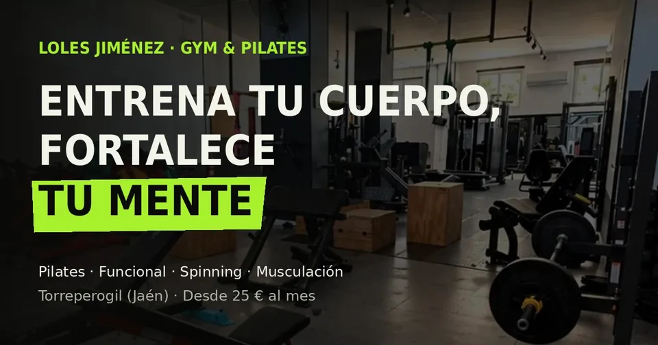
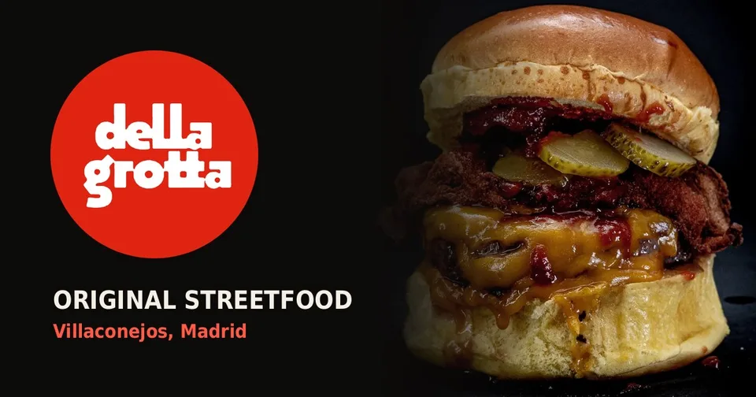
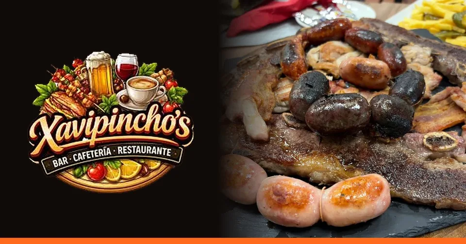
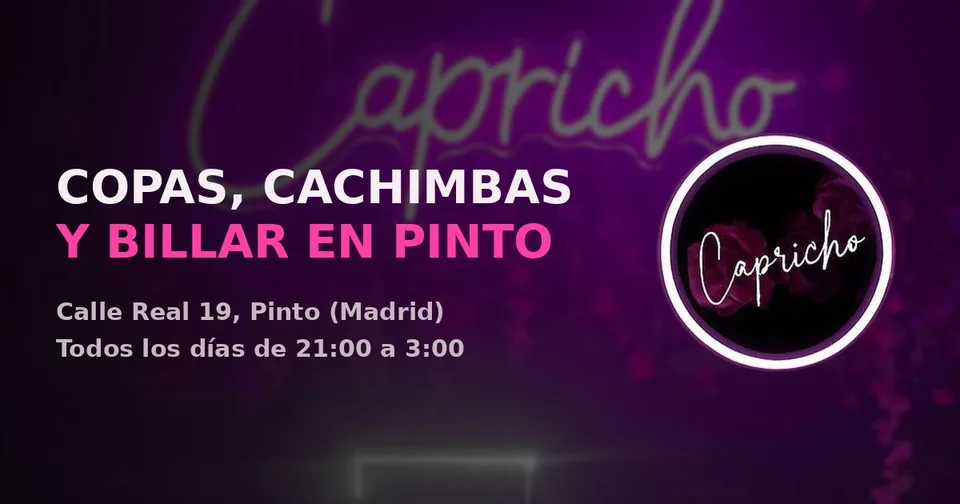

Loles Jiménez GYM & PILATES
Rediseñada a partir del propio cartel del gimnasio. Tarifas, actividades y un aviso de abierto o cerrado que se calcula con la hora real.
Ver la webMaquetación web · Pinto, Madrid
Busco negocios locales, estudio su marca y construyo la web completa en HTML, CSS y JavaScript, desde el diseño hasta la publicación. Cada proyecto pasa una auditoría automática de accesibilidad, contraste y diseño responsive antes de enseñarlo.
Propuestas que he diseñado y programado para negocios reales, con sus fotos, su carta y su horario.

Rediseñada a partir del propio cartel del gimnasio. Tarifas, actividades y un aviso de abierto o cerrado que se calcula con la hora real.
Ver la web
Carta por pestañas con fotos de los platos y un cartel de puerta con cuenta atrás hasta la apertura, según la hora de Madrid.
Ver la web
Carta de 76 platos organizada en cinco pestañas, sección de fútbol y eventos, y un tablero de horario en directo.
Ver la web
Identidad de neón fiel a la marca del local. El mapa de Google solo se carga si el visitante lo acepta.
Ver la web